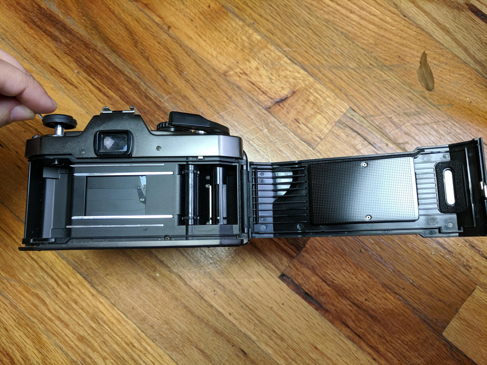
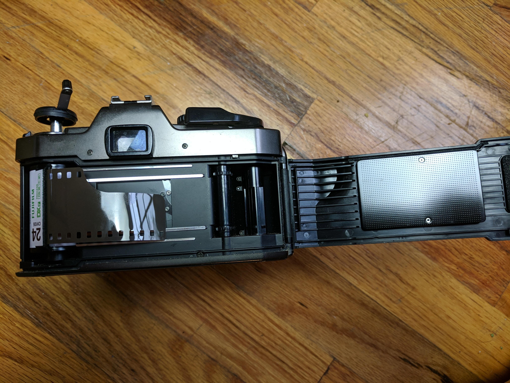
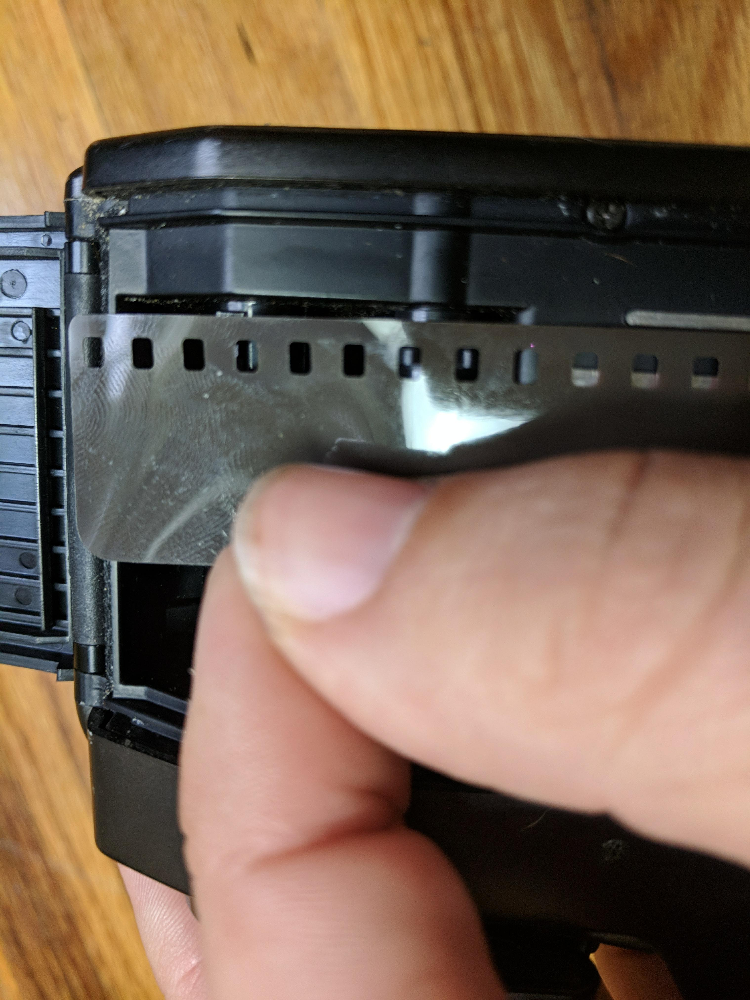
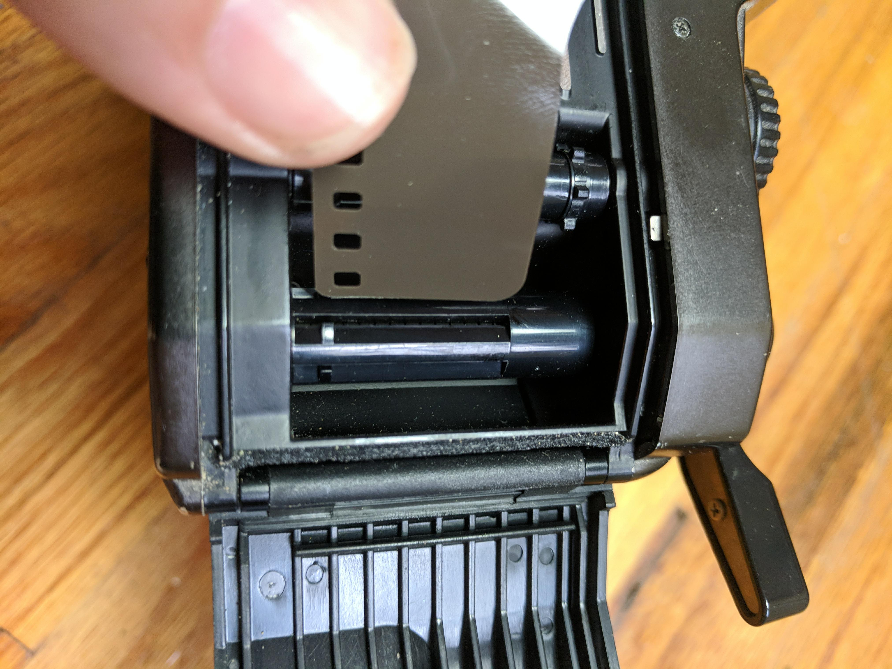
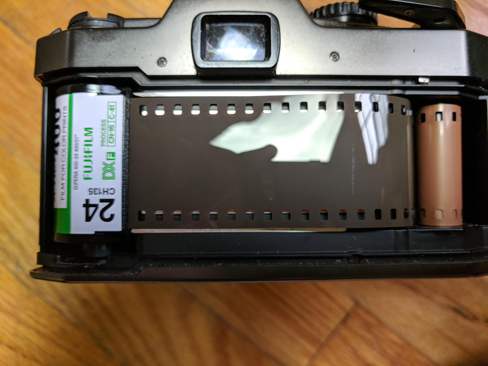
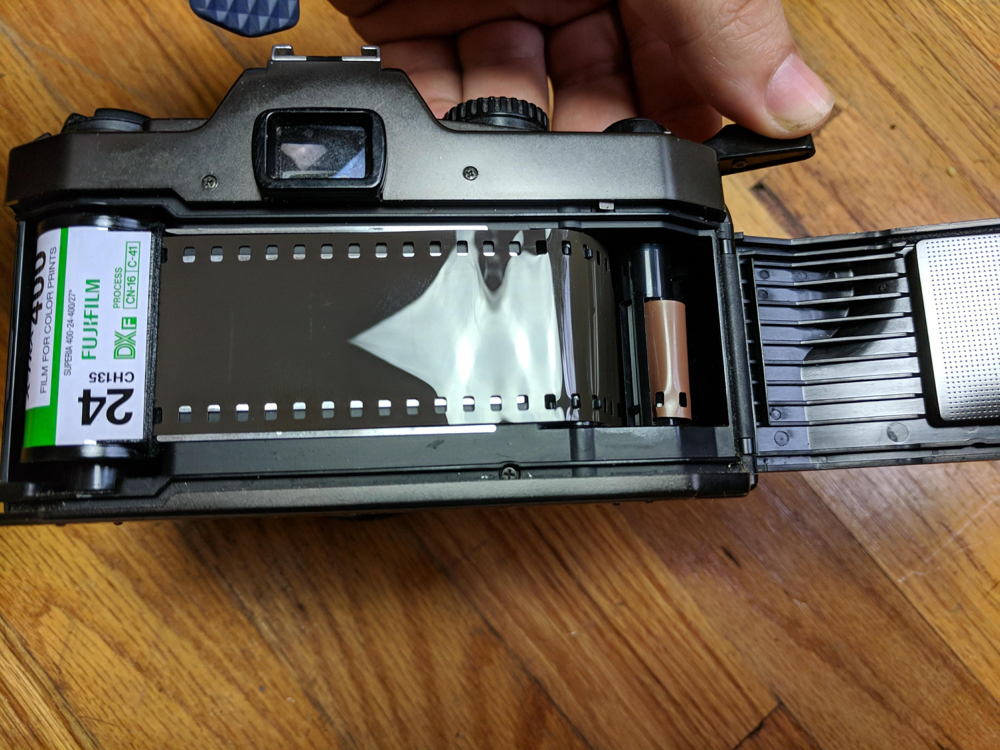
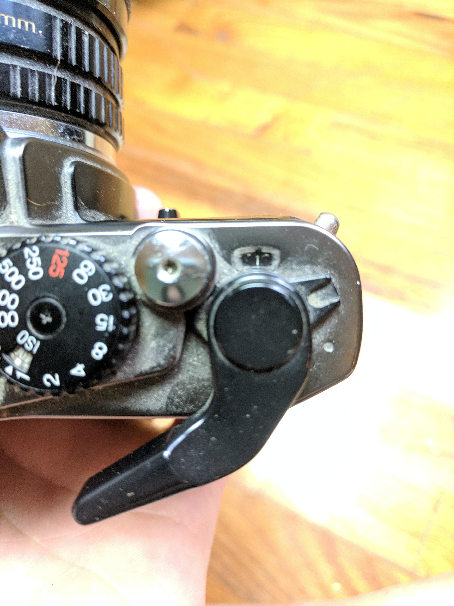
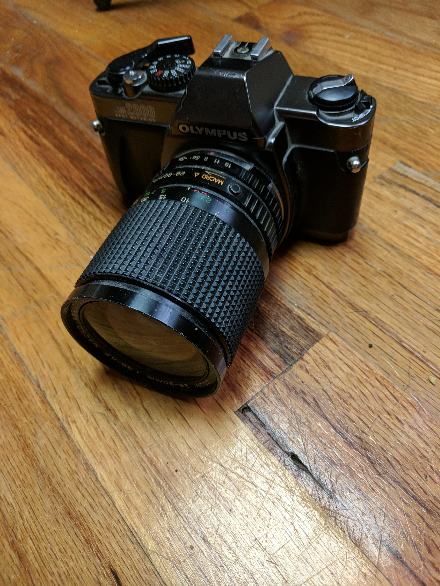

When you begin your journey into film analog photography. You may have trouble getting started. Well a nice place to start is learning how to load your film correctly.
What you need.
| Step:1 | Open back of camera. (Usually by lifting up on the winder. |
|---|---|
|  | |
| Step:2 | Place film in the film compartment on the left side. |
|  | |
| Step:3 | Stretch the roll of film over. |
|  | |
| Step:4 | Insert the edge of the film into the slit in the take-up spool. |
|  | |
| Step:5 | Now snap the shutter and advance the film using the film advance lever. |
|  | |
| Step:6 | Making sure that film sprocket holes have engaged with sprockets , repeat Step:5 |
|  | |
| Step:7 | Close the back and repeat Step:5 until the shutter/picture counter reaches 1. |
|  | |
| Step:8 | Youre now ready to go!! Goodluck and have fun! |
|  |
Once you have your camera loaded and youre out shooting here is a piece of advice from the great Ansel Adams
"The single most important component of a camera is the twelve inches behind it."
So remember dont get to hung up in photography gear,just go out and shoot!!